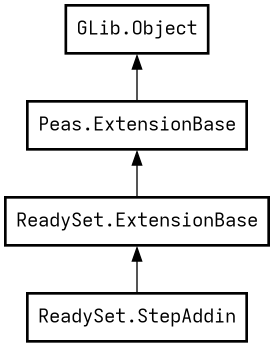

Base class for plugin that provides `step`.
What is `step`?
This class provides a page or series of pages that serve as a "step" to set up the current session (for initial setup or existing-user modes) or to save settings for future use (initial-setup with ReadySet.StepAddin.apply or installer with ReadySet.InstallerAddin.install).
If you using gresource, you should override ReadySet.StepAddin.resource_base_path and return your base path as get method.
`style.css` will be loaded from resource if file with this name exists.
Example:
protected override string? resource_base_path {
get {
return "/com/example/MyPlugin/";
}
}If necessary, you can disable entire plugin via ReadySet.StepAddin.enabled or pages separately via ReadySet.BasePage.accessible if your plugin is in unsuitable conditions for work (there are no permissions to perform actions, there are not enough executable files in the system, or a different desktop environment).
The enabling of your plugin can be changed by other plugins. For each plugin, a context variable `steps.<step-id>.enabled` is created (the step id is determined by the `Module` field in the plugin file), which bind with the ReadySet.StepAddin.enabled property.
ReadySet.Context is a way of communicating between plugins or an application.
ReadySet.ExtensionBase.context set somewhere at application initialization. It seting after construction and before ReadySet.ExtensionBase.init_once. It's an program error try to call to context before it set.